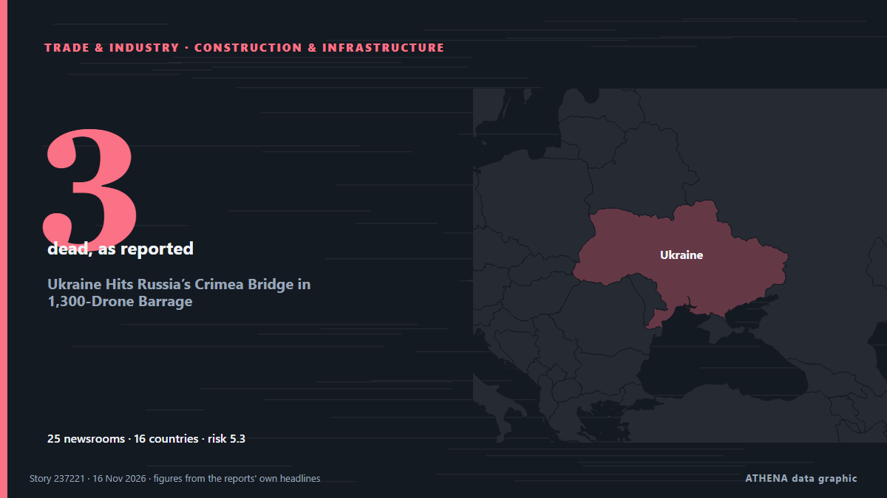

Ukraine Hits Russia’s Crimea Bridge in 1,300-Drone Barrage

Moscow: Ukraine fired hundreds of drones at Russia overnight, aiming towards Moscow and hitting a symbolic bridge that links the annexed Crimean peninsula to Russia.The strike on t... from Oman Observer
Reported independently by 25 outlets in 16 countries since 15 Nov, first by Ukrinform (English); coverage is fading. ATHENA rates the risk elevated (5.3/10), driven mainly by the severity of the harm described and its geographic and sector reach. Confidence is 89% (high), with 25 independent outlets corroborating it and an average source reliability of 78%. Outlets by country: Russia (11), Ukraine (6), China (2). Coverage: 15 Nov to 16 Nov, 43 hours.
Why it matters: Russia's full-scale invasion of Ukraine began in February 2022. This tracker follows the fighting, strikes on infrastructure and the diplomacy around the war, as covered by outlets around the world.
What changed: 34 new reports from 25 outlets in the 24 hours to 16 Nov.
First reported as: Crimean Bridge struck, traffic suspended -- Russian media
AutomatedSelected, grouped and scored by ATHENA's published method from 25 independent outlets. The headline is the outlet's own; ATHENA's sentences follow fixed patterns - no generative AI writes them. How it works →
How to read this page
- What you are reading
- 25 outlets in 16 countries reported this event. The reports below are listed in the order they appeared; each headline opens the original article. ATHENA writes none of the reports.
- Our reading
- Under watch — The reports describe action, or a decision still to be taken, between states or armed groups. ATHENA follows what happens next. We look for four kinds of development: nothing further, an open action that someone claims, an action through others or without a claim, and an accident or misreading. We do not predict which will happen.
- How much evidence
- Fair Several independent outlets agree, but the picture could still change.
After repeats, off-topic items and stale reports are removed, 22 of the 35 listed reports are counted; 97% of the headlines match the event.
- What this does not mean
- ATHENA measures how an event is reported, not whether it is true. This is not a forecast, a judgement on who is right, or advice.
- What would change it
- Reports from other independent outlets showing a different development, or a firm confirmation or denial from an official source.
Reading R2 · refreshed with every update of this page. ATHENA has not yet published a track record for these readings; when it does, it will be linked here.
At a glance
Selected, scored and written by ATHENA's published methodology. No editor intervenes in individual events. How this is produced ›
| 15 Nov 00:40 UTC | 1 |
|---|---|
| 15 Nov 02:40 UTC | 0 |
| 15 Nov 04:40 UTC | 0 |
| 15 Nov 06:40 UTC | 0 |
| 15 Nov 08:40 UTC | 0 |
| 15 Nov 10:40 UTC | 0 |
| 15 Nov 12:40 UTC | 0 |
| 15 Nov 14:40 UTC | 0 |
| 15 Nov 16:40 UTC | 0 |
| 15 Nov 18:40 UTC | 0 |
| 15 Nov 20:40 UTC | 0 |
| 15 Nov 22:40 UTC | 0 |
| 16 Nov 00:40 UTC | 0 |
| 16 Nov 02:40 UTC | 0 |
| 16 Nov 04:40 UTC | 3 |
| 16 Nov 06:40 UTC | 12 |
| 16 Nov 08:40 UTC | 12 |
| 16 Nov 10:40 UTC | 3 |
| 16 Nov 12:40 UTC | 1 |
| 16 Nov 14:40 UTC | 0 |
| 16 Nov 16:40 UTC | 2 |
| 16 Nov 18:40 UTC | 1 |
| 16 Nov 07:03 UTC | 0.0 |
|---|---|
| 16 Nov 08:05 UTC | 2.3 |
| 16 Nov 08:19 UTC | 1.8 |
| 16 Nov 08:37 UTC | 2.7 |
| 16 Nov 08:52 UTC | 1.8 |
| 16 Nov 09:46 UTC | 3.6 |
| 16 Nov 10:00 UTC | 4.4 |
| 16 Nov 10:29 UTC | 5.3 |
| 16 Nov 11:14 UTC | 4.7 |
| 16 Nov 13:08 UTC | 5.4 |
| 16 Nov 20:02 UTC | 5.3 |
Why these numbers
Importance
Risk
Confidence
The reporting — who reported it, and when
headline as published · opens the original- Ukrinform (English) · UkraineFour more former Crimean prosecutors sentenced for treason
- Oman Observer · OmanUkraine hits Russia's Crimea bridge in 1,300-drone barrage
- CGTN (World) · ChinaCrimean Bridge attacked as Russia reports massive drone strikes
- Ukrainska Pravda (English) · UkraineRussian occupiers report strike on Crimean Bridge and set up emergency response headquarters
- Kyiv Post · UkraineCrimean Bridge Shut After Ukrainian Strike as Russia Claims Record 1,336 Drones Downed
- TASS (English) · RussiaUkrainian army attacks Crimean Bridge — head of republic
- China Daily — page reader · ChinaCrimean Bridge struck, traffic suspended -- Russian media
- Cyprus Mail · CyprusUkraine hits key Crimean bridge, curbing traffic, Russian governor says
- Kurdistan24 (English) · IraqUkraine Strikes Crimea-Russia Bridge as Moscow Claims Interception of 1,336 Drones
- The Straits Times · SingaporeUkraine hits bridge linking Russia and Crimea, Kremlin says damage is 'minor'
- Anadolu Agency (English) · Turkey3 killed as Russia, Ukraine exchange accusations about overnight attacks
- Meduza (English) · RussiaUkraine strikes Crimea bridge, traffic suspended
- Ukrinform (English) · UkraineCrimean Bridge closed after attack – media
- APA (English) · AzerbaijanUkrainian army strikes Crimean Bridge, traffic suspended - UPDATED
- New Straits Times · MalaysiaUkraine strikes bridge linking Crimea to Russia: Regional official
- TASS (English) · RussiaRepairs underway on Crimean Bridge after drone attack — ministry
- Free Malaysia Today · MalaysiaUkraine hits Russia’s Crimea bridge in 1,300-drone barrage
- TASS (English) · RussiaIN BRIEF: Injuries in Krasnodar Region, strike on Crimean Bridge, 1,336 drones downed
- Kyiv Independent · UkraineUkraine reportedly strikes Crimean Bridge, forcing temporary traffic halt
- Türkiye Today · TurkeyUkraine strikes Crimea bridge, disrupting traffic to Russia: Official
- The Independent · United KingdomUkraine-Russia war latest: Kyiv strikes Crimean bridge as it launches huge assault on Moscow
- Le Monde (English) · FranceAfter Ukraine hits key Crimea bridge in 1,300-drone overnight barrage, Russia strikes Kyiv
- The Moscow Times · RussiaUkraine Hits Crimean Bridge Amid Record Overnight Drone Attack
- Novaya Gazeta Europe (EN) · RussiaLong queues build up around Crimean Bridge after Ukrainian drone attack halts traffic
- Asharq Al-Awsat (English) · Saudi ArabiaUkraine Hits Russia’s Crimea Bridge in 1,300-Drone Barrage
- Novinite · BulgariaTraffic Halted on Crimean Bridge After Reported Drone Attack
- APA (English) · AzerbaijanKremlin: Damage to Crimean Bridge being assessed
- Politico Europe · BelgiumRussia says Ukraine attacked Crimean bridge
- Channels TV · NigeriaUkraine Hits Russia’s Crimea Bridge In 1,300-Drone Barrage
- TASS (English) · RussiaRussian army repels major Ukrainian attack on Crimean Bridge, says State Duma member
- TASS (English) · RussiaEurope’s stance on Ukraine, Kiev’s strike on Crimean Bridge: Kremlin’s comment
- TASS (English) · RussiaCrimean Bridge attack geared to disrupt peace talks — Russian lawmaker
- Ukrainska Pravda (English) · UkraineRussians claim Crimean Bridge has partially reopened to traffic
- Meduza (English) · RussiaAfter Ukraine’s latest attack, Moscow calls damage to the Crimean Bridge ‘insignificant,’ but OSINT analysts say its main road span is visibly deformed
- TASS (English) · RussiaMotor traffic along Crimean Bridge resumes on single lane with alternating flow